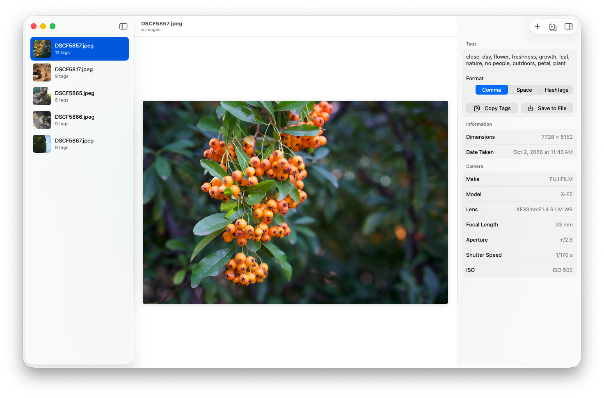

Runs on your Mac
The model runs on your Mac with Core ML. The app has no network access, so your photos never leave it.
For Mac · Open source
ImageTagger looks at your photos with a deep learning model that runs on your Mac, suggests keywords like flower, nature and outdoors, and saves them where Lightroom, Capture One and Photo Mechanic find them.
Free download · macOS 26.5 or later · Apple silicon and Intel

How it works
No account and no setup. Open your photos and ImageTagger gets to work.
Choose File › Add Images…, drag photos or whole folders onto the window or the Dock icon, or use Open With in Finder. Folders are searched with all their subfolders.
Photos are analyzed in the background, several at a time. The inspector shows each photo’s tags next to its camera, lens and exposure.
Save the tags into your files with ⌘S, or let ImageTagger save them as soon as each photo is analyzed. Or copy them for your next post.
Features
ImageTagger writes keywords the way photo apps expect them, and treats your originals with care.
The model runs on your Mac with Core ML. The app has no network access, so your photos never leave it.
CR2, CR3, NEF, ARW, RAF, ORF, RW2, DNG and other RAW files are never modified. Their keywords go to an XMP sidecar next to them.
New tags are merged with the keywords already in the file. Nothing is removed, and tags that are already there aren’t added again.
JPEG, HEIC and TIFF images get the keywords without being compressed again, and every file is checked before it replaces the original.
Drop a folder and every photo in it is analyzed in parallel, with progress in the sidebar. Press ⌘. to stop at any time.
The inspector shows the dimensions, date taken, author, camera, lens, focal length, aperture, shutter speed and ISO.
Saving tags
Tags go into the standard keywords field, XMP dc:subject, and into the IPTC keywords when
the file already has them. The apps you use can then search and filter by them.
<dc:subject>
<rdf:Bag>
<rdf:li>architecture</rdf:li>
<rdf:li>building exterior</rdf:li>
<rdf:li>tower</rdf:li>
</rdf:Bag>
</dc:subject>
Copying tags
Copy tags separated by commas or spaces, or as hashtags with multi-word tags joined together. Press ⇧⌘C to copy, and ImageTagger remembers the format you chose.
DSCF5857.jpeg 11 tags
close, day, flower, freshness, growth, leaf, nature, no people, outdoors, petal, plant
Command line
The imagetagger command comes with the app you download here. It uses the same model and
saves tags the same way, so you can tag a folder right after an import, or from your own scripts.
Add --dry-run to only print the tags, and --format hashtags to print them
ready to post. To install it, choose Install Command Line Tool… in the ImageTagger menu.
ImageTagger doesn’t collect any data. There are no accounts, no analytics and no uploads, and the app only reads the photos you give it.
Read the privacy policy →ImageTagger is open source under the GNU General Public License v3. It’s a native Mac version of the original ImageTagger, written in SwiftUI.
Requires macOS 26.5 or later